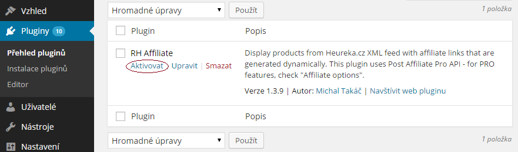

Bakalárska práca
Programový prostriedok = plugin pre Wordpress
Ciele:
Provízny systém vo forme spolupráce medzi predajcami výrobkov alebo poskytovateľov služieb a partnermi, ktorí sa snažia tieto výrobky/služby propagovať.
Internetový obchod - predajca výrobkov
Boardmag.cz - partner propagujúci tieto výrobky
Za každú transakciu vykonanú užívateľom, ktorý bol po kliknutí na produkt presmerovaný na stránku internetového obchodu, bude vyplatená provízia.
Pozmenený prístup k aplikácii affiliate marketingu - "reverzný" affiliate.
Dve vygenerované JavaScript kódy (jeden pre partnerov web a jeden pre internetový obchod) sa umiestnia na každú podstránku do pätičky webu.
Pre sledovanie transakcií sa vygeneruje špeciálny JavaScript kód určený pre platobný procesor, ktorý daný internetový obchod využíva.
Dátový súbor vo formáte XML, ktorý obsahuje export všetkých potrebných informácií o produktoch
Heureka.cz + Heureka.sk = tisíce internetových obchodov s rovnakým XML feed-om.
77246
Boty Vans Authentic Red
Boty Vans Authentic Red 37
Vans Authentic - klasický tvar od Vans Class. Decentní nášivka s logem Vans na boku, gumové logo na patě, výrazný boční lem podrážky. Materiál: pevná látka, látková stélka, gumová podrážka. Bílé tkaničky.
http://www.freshlabels.cz/produkty/vans-authentic-vs385/?velikost=37
http://www.freshlabels.cz/public/content-images/shared/product/dsc-0547-123073.jpg
1450
Vans
Heureka.cz | Oblečení a móda | Obuv | Dámská obuv
Velikost
37
0
vs385
Umiestnenie adresára "rh-affiliate" na server do zložky pre Wordpress pluginy:
http://www.priklad.sk/wp-content/plugins/Následne je potrebné plugin aktivovať.
ID Affiliate partnera.
Pripojí sa dynamicky ku každému odkazu na produkt z internetového obchodu.
http://freshlabels.cz/produkty/nazov-produktu#a_aid=boardmagcz&a_bid=a358d6f9"Skratkový kód", ktorým sa volajú časti kódu (HTML, PHP, JS).
Môže byť vložený do článku alebo stránky Wordpressu.
Skopírovanie [rhaffiliate title="názov"] do článku alebo stránky.
- Boardmag.cz
- Post Affiliate Pro